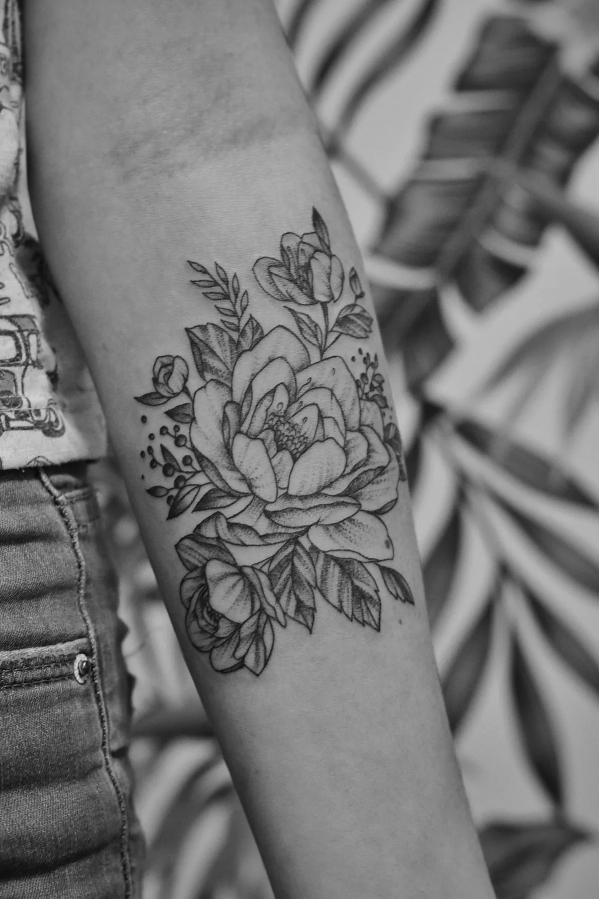
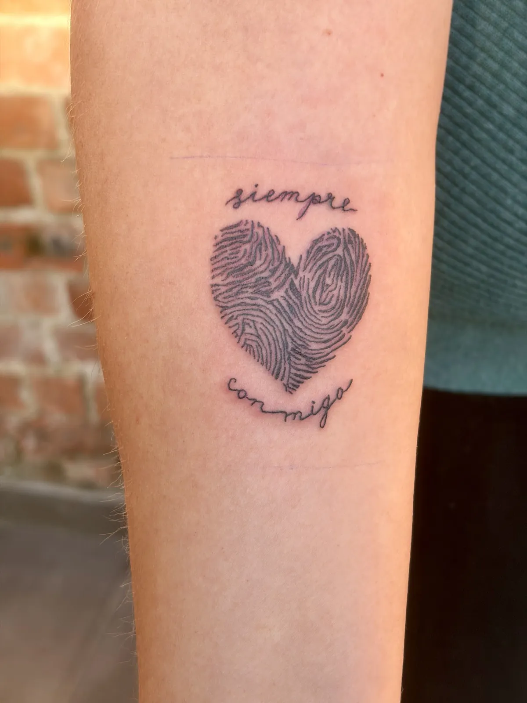
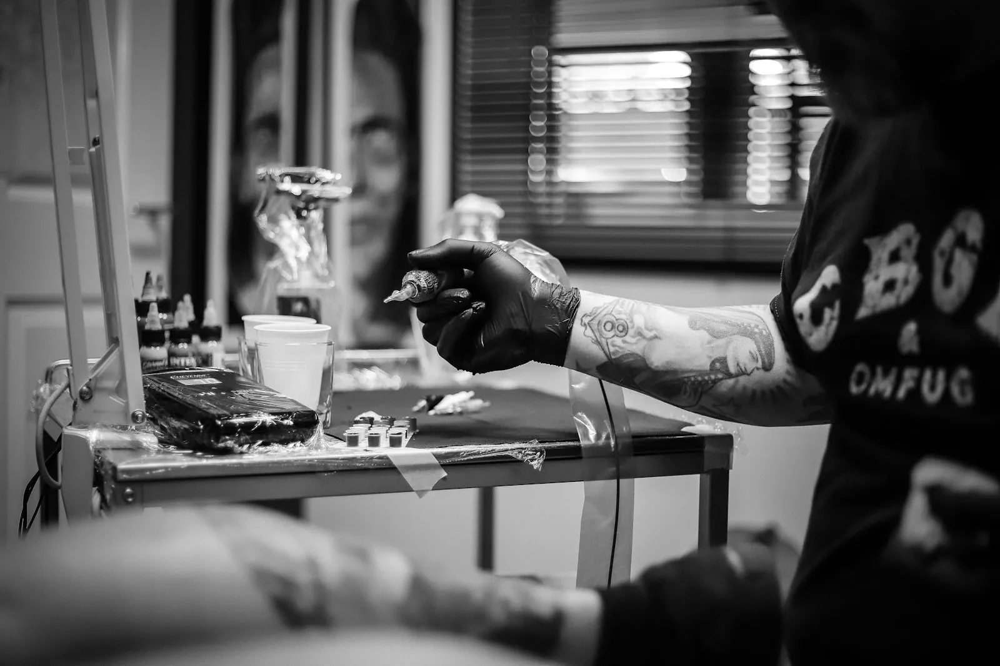
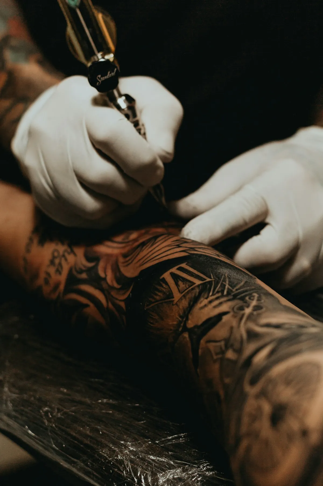

01
Fine line
Bloemen, takjes, kleine symbolen. Fijn gezet, zodat het licht en elegant blijft.
Een naam in je eigen handschrift, een vingerafdruk die je nooit meer kwijt wil, een takje dat alleen jij begrijpt. Bij CIRK krijgt elk idee de tijd en de fijne naald die het verdient.


Fine lineDunne, zuivere lijnen die mooi ouder worden
LetteringNamen, data en zinnen in een eigen hand
Eigen ontwerpSamen getekend tot het echt van jou is
Afspraak via DMEen bericht met je idee is genoeg
Geen catalogus om uit te kiezen. Je brengt een gedachte mee, een foto of een stukje tekst, en daar tekenen we iets van dat nergens anders rondloopt.

Bloemen, takjes, kleine symbolen. Fijn gezet, zodat het licht en elegant blijft.
Een naam, een datum of een zin die je wil bijhouden. In een letter die past bij wie je bent, of in het handschrift van iemand die je mist.
Een vingerafdruk, een pootje, een tekening van je kind. Kleine herinneringen die je altijd bij je hebt.
CIRK doet meer dan huid. Vraag gerust wat er kan.
Je draagt het de rest van je leven. Dan mag het ontwerp ook even duren.


Twijfel je nog over de plek of de grootte? Dat is normaal. Daar praten we eerst rustig over.
Een berichtje met wat foto's, de plek en de grootte die je in gedachten hebt.
Mariska maakt er een ontwerp van en past het aan tot het klopt voor jou.
Rustig, zonder haast. Eerst de stencil op je huid, pas dan de naald.
Je gaat naar huis met uitleg over de verzorging, en met vragen kan je altijd terecht.
Een greep uit de stijl. Het meest recente werk staat altijd op Instagram.
CIRK is de zaak van Mariska Van Lissum. Je spreekt haar zelf, van het eerste berichtje tot de laatste lijn. Geen loket, geen wachtrij van artiesten, gewoon iemand die graag fijn werkt en tijd maakt voor jouw verhaal.
Samen goed voor een 4,9 op 5 op Google. Benieuwd wat ze schrijven? Lees het zelf.
Lees de reviewsEen schets op een bierviltje is ook goed. Zet erbij waar je het wil en hoe groot ongeveer, dan kijkt Mariska wat er mogelijk is.
Ik maakte deze demo voor jullie om te tonen wat er kan. Na een kort gesprek maak ik er iets veel persoonlijkers van, helemaal naar jullie wens.
Vrijblijvend. Ik kom langs of we bellen.
Op maat, op jullie eigen domein.
Geen voorschot. Jullie betalen pas als alles klaar is.
Hosting, domeinnaam en kleine wijzigingen, zoals nieuwe openingsuren.
Omdat een voorbeeld meer zegt dan een mail. Zo zien jullie meteen wat er kan, en het kost jullie niets.
Nee. Het gesprek is vrijblijvend. Vinden jullie het niks, dan is het daarmee gedaan.
Na ons gesprek staat jullie site binnen 10 tot 14 dagen online.
Zeker. Jullie domeinnaam kan gewoon blijven, de nieuwe site komt in de plaats van de oude.
Nee, dat doe ik op basis van ons gesprek. Eigen foto's zijn mooi meegenomen, maar niet nodig om te starten.